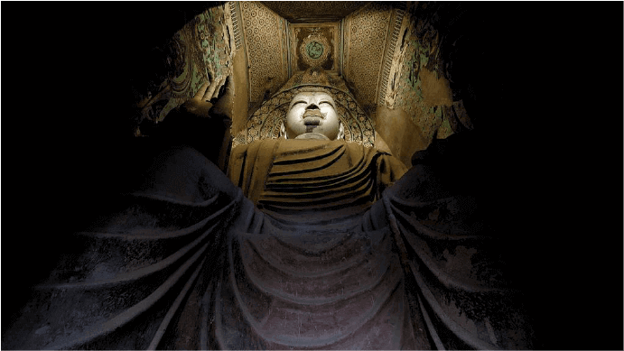

敦煌学|文 超级管理员
时间：2015年7月17日（星期五）下午2：30
地点：敦煌研究院文献研究所阅览室
主持人：张先堂（敦煌研究院科研处处长、研究员）
1、主讲人：马德（敦煌研究院文献研究所所长、研究员、博导）
题目：敦煌菩萨竺法护遗迹寻踪-兼论莫高窟创建渊源
摘要：关于敦煌莫高窟始建年代，目前学界一直使用前秦建元二年（公元366年）的说法，但“索靖题壁仙岩寺”之记载，却成为前秦时期创建说的矛盾点，由于史料记载缺乏，这一矛盾始终困扰着学界，马德研究员的《敦煌菩萨竺法护遗迹寻踪-兼论莫高窟创建渊源》一文，为解决这个矛盾，把敦煌莫高窟营建史研究向前推进了一大步。

马德研究员通过五个部分，依据相关文献如P.T993、P.2691、S.3329等记载，以竺法护的活动踪迹为线索，为我们论述了莫高窟创建渊源。
第一部分马德通过梳理竺法护的译经过程，认为竺法护通过翻译大乘佛教经典特别是《正法华经》，对中国的大乘佛教起到奠基作用，同时也使得竺法护拥有了一个响亮的名号“敦煌菩萨”，这让敦煌的名字和这位高僧紧密的联系在了一起，使敦煌实际上成为大乘佛教的发源地！
1235
2265
我我我 123
各第一部分马德通过梳理竺法护的译经过程，认为竺法护通过翻译大乘佛教经典特别是《正法华经》
21分钟前
你你你：你说的很棒
我我我回复你你你：你胡说搞事情